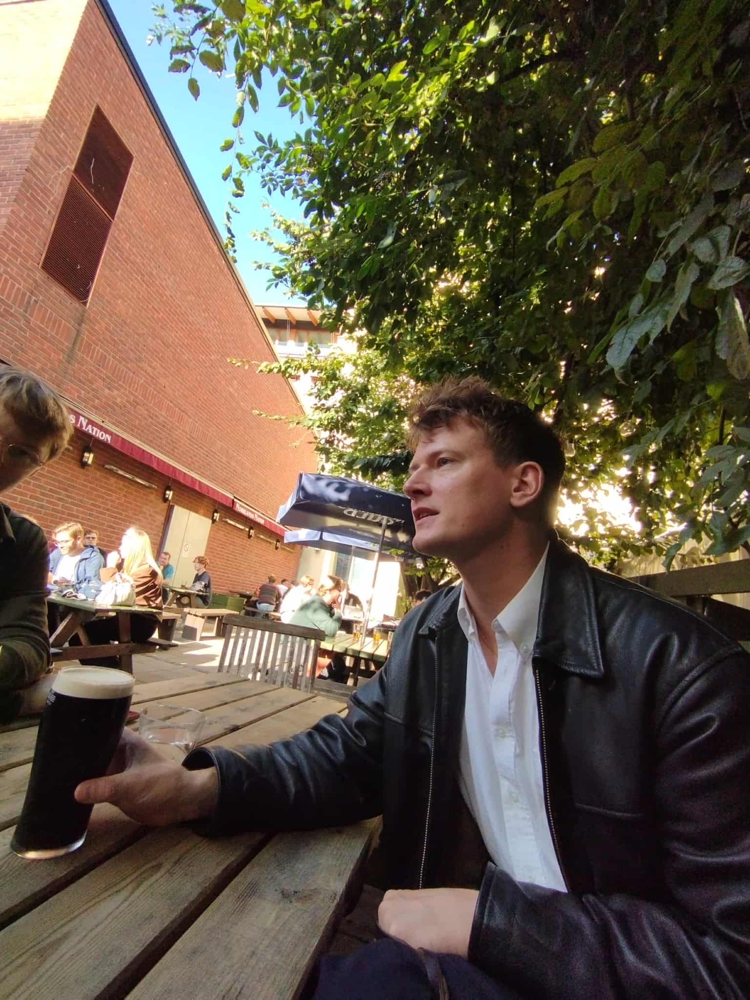

Adam Ehlert
PhD student in Clinical Medical Ethics
Email

About me
I am a doctoral student in clinical medical ethics at Uppsala university.
My research is mainly focused on priority setting in healthcare.
I have a BA in practical philosophy, a BA in linguistics and an MA in practical philosophy, all from Uppsala university.
My main philosophical interests are normative ethics, value theory, applied ethics and sports philosophy.
Selected papers
- Ehlert, A. (2024). "Severity and Death", in Medicine, Health Care and Philosophy. Link
- Ehlert, A. (2025). "Double-Threshold Prioritarianism - Some Problems and Solutions", in Health Care Analysis. Link
- Dahlin, M. & Ehlert, A. (2025) "Juridik, etik och expertis vid prioriteringar i den svenzka hälso- och sjukvården", in Nordisk socialrättslig tidskrift. Link
Teaching
I teach select courses at the med school at Uppsala university, mainly focusing on ethical deliberation, emergency ethics and transplant ethics.
I have also taught undergraduate courses at the philosophy department in Uppsala on normative ethics and applied ethics.
Other
I am originally from Norrköping, but have lived in Uppsala for over 10 years. I like to read, especially of literary fiction. (heres a link to my Goodreads profile.)
I also have a keen interest in music (mostly death metal, but anything goes) and classic menswear.
I spend a lot of my free time cooking and taking care of my dog Tess (an irish soft-coated wheaten terrier).
Some good metal albums
- Salvation Laughs in the Face of a Grieving Mother by PSYCHO-FRAME (MySpace Deathcore)
- The Spiritual Sound by Agriculture (Progressive Black Metal)
- I Loved You At Your Darkest by Behemoth (Blackened Death Metal)
- Rejecting Obliteration by Blindfolded and Led to the Woods (Progressive Death Metal)
- Everything Bleeds by Crown Magnetar (Deathcore)
- Where Myth Becomes Memory by Rolo Tomassi (Post-Metal)
- New World Killer by Spite (Deathcore)
- Never Ending Holocaust by Mass Extinction (Grindcore)
Currently reading
- The Philosophy of Football by Steffen Borge
- Emma by Jane Austen
- Grapes of Wrath by John Steinbeck
Favourite books
- The Master and Margarita by Mikhail Bulgakov
- The Corrections by Jonathan Franzen
- Infinite Jest by David Foster Wallace
- Doppler by Erlend Loe
- White Noise by Don DeLillo
Contact
Email: adamehlert@uu.se
ORCID: orcid.org/0009-0001-9961-9326
PhilPeople: Adam Ehlert
© 2025 Adam Ehlert